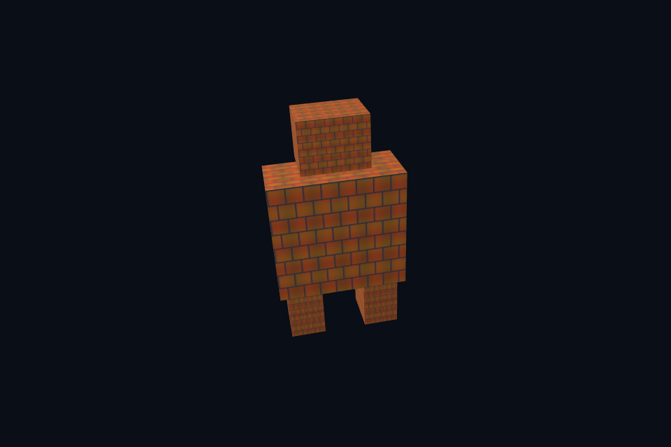

dx36_integration · 模型纹理 mip MSAA 综合
54 课目录
本课独立工程与关键注释
main.cpp · 本地辅助实现 · 本课着色器 · CMakeLists.txt
本目录包含独立课程源码，关键位置有中文注释。单独复制整个文件夹后可用 cmake -S . -B build -A x64 配置、cmake --build build --config Debug 构建；不需要其他章节源码。
目的与实际执行
同样的 CPU 几何进入独立后端，texture view、MSAA resolve 和 CBV/PSO 使用期由 DX12 规则维护。CPU 生成正确 sRGB mip 与线性 GPU compute mip 是两条明确路径，不能混称同一种算法。
本程序的 C++、辅助实现、着色器和构建脚本均位于本目录，关键步骤含中文注释。设备/API 检查、数值 compute 与图形渲染采用不同证据；不是每个程序都会弹出窗口。
构建和运行
cmake --preset dx12
cmake --build --preset dx12-debug --target dx36_integration --parallel 4
.\DirectX12\build\bin\Debug\dx36_integration.exe
深入学习：数据、接口与执行
本课的真实源码切片
来自 DirectX12/lessons/dx36_integration/main.cpp，第 319—332 行；这是现有实现的局部摘录，末尾可能处于函数中间，不是可单独编译的完整程序。
int runChapter(int argc, char** argv) {
auto options = labOptions(argc, argv, 36);
{
return graphicsLab(argc, argv, options);
}
}
} // namespace course
int main(int argc, char** argv) try {
return course::runChapter(argc, argv);
} catch (const std::exception& error) {
std::cerr << "ERROR: " << error.what() << '\n';
return 1;
}
同主题跨 API 导航
先预测，再验证
选择阴影、IBL 或骨骼动画之一，先写资源表、pass 依赖图、中间调试视图和验收条件，再实现。
参考推导：原生/DX12 当前完成静态模型、mip/MSAA、直接光 PBR 和计算扩展；完整 glTF 材质、skin/动画、IBL、SSAO 等仍需单独工程实现与验证。清楚标记边界比扩大功能名列表更有价值。
验证与边界
运行 --smoke 执行有限自动检查。数值实验读取实际 GPU 结果，图形实验检查非空图像并可查看读回。交互重建与性能还需额外证据；窗口 renderer 当前保留串行等待，双槽计算实验不会被描述为完整多帧呈现引擎。
实际画面
